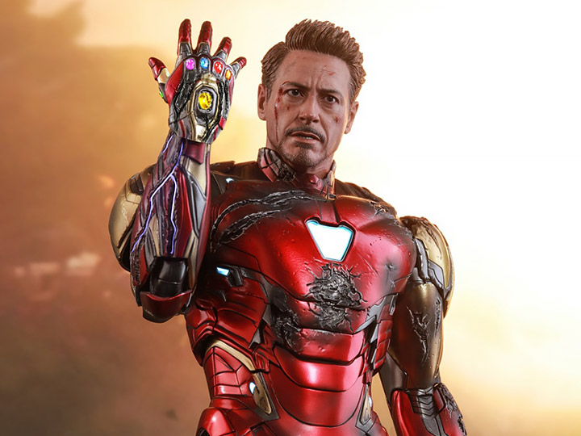

Homem de Ferro
Tony Stark - O Gênio, Bilionário, Playboy, Filantropo

"Eu sou o Homem de Ferro."
Biografia
Anthony Edward "Tony" Stark foi um gênio inventor e CEO da Stark Industries. Após ser sequestrado e ferido no peito, criou a armadura do Homem de Ferro para escapar. Mais tarde, tornou-se um dos fundadores dos Vingadores.
Sua frase final para Thanos: "Você é inevitável, mas Eu Sou O Homem de Ferro."
Curiosidades
- Criou a primeira armadura em uma caverna com recursos limitados.
- Desenvolveu a tecnologia Arc Reactor para salvar seu próprio coração.
- Foi o responsável por criar a inteligência artificial J.A.R.V.I.S. e posteriormente a V.I.S.ÃO.